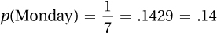
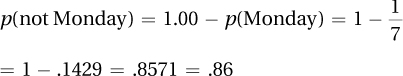
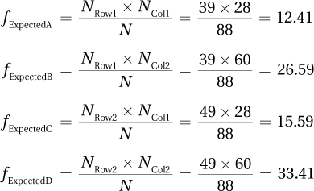

Appendix C
C-1
APPENDIX C
Solutions to Practice Problems
Chapter 1
Practice Problems 1.1
1.01 Statistics are techniques used to summarize data in order to answer questions.
1.02 Examples of questions to be asked of the sample IQ data:
How smart is the average sixth grader?
How smart is the smartest sixth grader?
What is the range of IQ scores for sixth graders?
How many sixth graders have IQ scores that classify them as geniuses?
Is there a difference in the IQs of boys and girls?
Practice Problems 1.2
1.03 Correlational, experimental, and quasi-experimental
1.04 Experimental
1.05 Experimental
1.06 Correlational and quasi-experimental
1.07
Do different types of studying, spaced vs. massed, have an impact on how much one learns?
Type of studying is the explanatory (independent) variable; number of nonsense syllables recalled is the outcome (dependent) variable.
Experimental
N/A
1.08
Does amount of sleep affect school performance?
Amount of sleep is the explanatory (grouping) variable; average grade is the outcome (dependent) variable.
Quasi-experimental
Breakfast may be a confounding variable. People who don’t get enough sleep may not have time to eat breakfast. Not eating breakfast may impair school performance.
1.09
Is fiber consumption related to GI health?
Fiber consumption is the explanatory (predictor) variable; number of episodes of GI distress is the outcome (criterion) variable.
Correlational
Intelligence may be a confounding variable. More intelligent people keep up on the news and the news recently has been pushing consumption of fiber. More intelligent people may also take better care of themselves in general, so they have better health, thus fewer episodes of GI distress.
Practice Problems 1.3
1.10 Nominal, ordinal, interval, and ratio
1.11 The scale now provides information about how much distance separates two scores.
1.12 An absolute zero point represents an absence of the characteristic.
1.13 Ratio
1.14 Ordinal
1.15 Nominal
1.16 Interval
Practice Problems 1.4
1.17 Greek letters are abbreviations for population values (parameters); Latin letters are abbreviations for sample values (statistics).
1.18 Inferential statistic
1.19
Parameter. (It is a statement about the whole population of softball players at that college.)
Descriptive
1.20
Sample
Inferential
Practice Problems 1.5
1.21 ∑
1.22 Math within parentheses or brackets
1.23 Two
1.24
N = 4
∑X = 12 + 8 + 4 + 6 = 30.0000 = 30.00
∑X2 = 122 + 82 + 42+ 62 = 144.0000 + 64.0000 + 16.0000 + 36.0000 = 260.0000 = 260.00
(∑X)2 = (12 + 8 + 4 + 6)2 = 30.00002
= 900.0000 = 900.00
∑X + 1 = ∑ (12 + 8 + 4 + 6) +1 = 30.0000 + 1 = 31.0000 = 31.00
∑(X+ + 1) = (12 + 1) +(8 + 1) + (4 +1) +(6 + 1)
= 13.0000 + 9.0000 + 5.0000 + 7.0000
= 34.0000 = 34.00
1.25
17.79
9.74
12.98
8.35
7.12
1.67
2.00
C-2
Chapter 2
Practice Problems 2.1
2.01 If the variable takes on a limited number of values, make an ungrouped frequency distribution. If the variable has a large number of values and it is OK to collapse them into intervals, make a grouped frequency distribution. If the variable has a large number of values and there is need to retain information about the frequency of all the values, make an ungrouped frequency distribution.
2.02 Cumulative frequency tells how many cases in the data set have a given value or a lower value.
2.03 One needs to impose some logical order on a frequency distribution for a nominal variable, perhaps arrange the categories in alphabetical order or in ascending or descending frequency order.
2.04 One should aim to have 5–9 intervals.
2.05 One calculates the midpoint by finding the point halfway between the upper limit and the lower limit of an interval.
2.06 Don’t forget a title!
Frequency Distribution for Time for Heart Rate to Return to Normal after Exercise for 30 College Students
| Minutes for Heart Rate to Return to Normal | Frequency | Cumulative Frequency | Percentage | Cumulative Percentage |
| 14 | 1 | 30 | 3.33 | 100.00 |
| 13 | 0 | 29 | 0.00 | 96.67 |
| 12 | 1 | 29 | 3.33 | 96.67 |
| 11 | 2 | 28 | 6.67 | 93.33 |
| 10 | 1 | 26 | 3.33 | 86.67 |
| 9 | 1 | 25 | 3.33 | 83.33 |
| 8 | 4 | 24 | 13.33 | 80.00 |
| 7 | 3 | 20 | 10.00 | 66.67 |
| 6 | 2 | 17 | 6.67 | 56.67 |
| 5 | 2 | 15 | 6.67 | 50.00 |
| 4 | 3 | 13 | 10.00 | 43.33 |
| 3 | 5 | 10 | 16.67 | 33.33 |
| 2 | 4 | 5 | 13.33 | 16.67 |
| 1 | 1 | 1 | 3.33 | 3.33 |
2.07
Grouped Frequency Distribution for Final Grades in Psychology Class of 58 Students (Interval Width = 10)
| Grade Interval | Interval Midpoint | Frequency | Cumulative Frequency | Percentage | Cumulative Percentage |
| 90–99 | 94.5 | 9 | 58 | 15.52 | 100.00 |
| 80–89 | 84.5 | 20 | 49 | 34.48 | 84.48 |
| 70–79 | 74.5 | 16 | 29 | 27.59 | 50.00 |
| 60–69 | 64.5 | 9 | 13 | 15.52 | 22.41 |
| 50–59 | 54.5 | 4 | 4 | 6.90 | 6.90 |
Practice Problems 2.2
2.08 Continuous numbers answer the question “How much?” and discrete numbers answer the question “How many?” Continuous numbers can be made more specific, for example, measuring weight to the nearest ounce, not pound, by using a more precise measuring instrument. Discrete numbers only take whole number values.
2.09 Assign them the value of the midpoint, 47.00.
2.10
Continuous
Discrete
Continuous
2.11
| Real Lower Limit | Real Upper Limit | Interval Width | Midpoint | |
| a. | 19.50 | 24.50 | 5.00 | 22.00 |
| b. | 250.00 | 300.00 | 50.00 | 275.00 |
| c. | 1.25 | 1.45 | 0.20 | 1.35 |
| d. | 2,500.00 | 4,500.00 | 2,000.00 | 3,500.00 |
Practice Problems 2.3
2.12 With continuous data, use a histogram or a frequency polygon. With discrete data, use a bar graph.
2.13 Bars go up and come down at the real limits of the interval for a histogram.
2.14 The data, which are nominal and so discrete, need to be ordered in some way. Here, they are organized in descending order of frequency. Note that the sample size is included in the title and the axes are labeled.
C-3
2.15 One can make either a histogram or a frequency polygon for these continuous data. The requency polygon is a little awkward as the point at which it goes to zero, at both ends of the scale, occurs at values that don’t exist.
Practice Problems 2.4
2.16 One can describe the shape of a frequency distribution for ordinal-, interval-, or ratio-level variables.
2.17 The normal curve is symmetric, unimodal, and neither too peaked nor too flat.
2.18 Positive skewness means that the tail of the frequency distribution extends further on the right-hand side.
2.19 Religious faith is a nominal-level variable. Because the order in which a nominal variable is arranged is arbitrary, it is inappropriate to discuss shape.
2.20 Depression level is unimodal. The peak may be a little higher than normal. The distribution is positively skewed.
2.21
| 18 | 3 |
| 19 | 2 |
| 20 | 33 |
| 21 | 19 |
| 22 | 07889 |
| 23 | 0344 |
| 24 | 89 |
| 25 | 4 |
| 26 | 6 |
The stem-and-leaf plot is unimodal. The peak may be a little flatter than normal. The distribution is approximately symmetric.
Chapter 3
Practice Problems 3.1
3.01 Mean, median, and mode
3.02 (a) Mode; (b) mode or median; (c) mode or median or mean
3.03 A skewed data set makes the mean an inappropriate choice as a measure of central tendency. It drags the mean in the direction of the skew. For example, if there is positive skew, the mean will be bigger than the median.
3.04 IQ is an interval-level measure, so the “go to” measure of central tendency is the mean. A frequency distribution shows nothing unusual in terms of skewness or kurtosis, so it is OK to proceed with the mean.
C-4
3.05 The number of times a neuron fires is a ratio-level variable, so the “go to” measure of central tendency is the mean. However, a frequency distribution shows that the data are bimodal, making the mean inappropriate. Report the two modes, 2 and 10, instead.
3.06 The data are nominal, so the only option for a measure of central tendency is the mode. The average taste bud in the sample responded to sweet (5).
Practice Problems 3.2
3.07 The set of scores with more variability is less tightly clustered together; it stretches out over a wider range.
3.08 A disadvantage of the range is that it is influenced by outliers. Another disadvantage is that it only uses information from two scores.
3.09 An advantage of the interquartile range is that it is not influenced by extreme scores. Another advantage is that it also functions as a measure of central tendency.
3.10 The variance and standard deviation, unlike the range and interquartile range, use information from all the scores in the data set to determine variability.
3.11 The lowest MMPI score is 60 and the highest is 84. Range = 84 − 60 = 24.00.
3.12 The mean is 19.00.
| Size in Acres | Deviation Score (X – M) | Squared Deviation Score (X – M)2 |
| 8 | 11.00 | 121.00 |
| 10 | 9.00 | 81.00 |
| 22 | 3.00 | 9.00 |
| 23 | 4.00 | 16.00 |
| 32 | 13.00 | 169.00 |
| ∑ = 396.00 |
Chapter 4
Practice Problems 4.1
4.01 z scores express raw scores in standard deviation units.
4.02 ∑z = 0.00
4.03 A positive z score indicates that the raw score falls above the mean.
4.04
4.05 GPA = X = M + (z × s) = 2.75 + (–2.30 × 0.40)
= 2.75 + (–0.9200) = 2.75 − 0.9200 = 1.8300
= 1.83
Practice Problems 4.2
4.06 The normal distribution is symmetrical, with the highest spot at the midpoint, and decreasing frequencies as one moves away from the midpoint. Though many distributions have this shape, the normal distribution is a specific version defined by the percentage of cases that fall in specified regions.
4.07 The midpoint of a normal distribution is the mean, median, and mode.
4.08 34, 14, and 2 represent the approximate percentage of cases that fall in each of the first three standard deviations as one moves away from the mean in a normal distribution.
4.09 Using column A, 90.82%
4.10 Using column C, 0.38%
4.11 Using column B, 30.23%
Practice Problems 4.3
4.12 A percentile rank is a score’s case expressed as the percentage of cases with a score at the same level or lower.
4.13 PR = 50
4.14 Using column A, z = 0.84.
4.15 Using column C, PR = 32.64.
Practice Problems 4.4
4.16 Probability is the likelihood of the occurrence of an outcome.
4.17 The smallest probability for an outcome is zero; the greatest is 1.
4.18 ±0.84
4.19 
4.20 
4.21
C-5
4.22  (from column C) of cases in a normal distribution have a z score ≥1.53. Thus, the probability of someone having an IQ of 123 or higher is .0630.
(from column C) of cases in a normal distribution have a z score ≥1.53. Thus, the probability of someone having an IQ of 123 or higher is .0630.
Chapter 5
Practice Problems 5.1
5.01 A representative sample is an accurate reflection of the population. It contains all the attributes of the population in a similar proportion as they exist in the population.
5.02 Consent rate is the percentage of cases targeted to be in the sample that end up in it.
5.03 Sampling error is caused by random factors.
5.04 There are many ways a random sample could be drawn. All numbers could be put in a hat, the hat shaken, and then numbers drawn. A random number table could be used.
5.05 Drawing a large and random sample can minimize sampling error.
Practice Problems 5.2
5.06 A sampling distribution is a frequency distribution of some statistic, like a mean, that has been calculated for repeated random samples of a given size from a population.
5.07 The central limit theorem predicts three things about a sampling distribution of the mean as long as the size of the samples is large enough: (a) the sampling distribution will be normally distributed; (b) the mean of the sampling distribution is the mean of the population; and (c) the standard deviation of the sampling distribution, called the standard error of the mean, is calculated from N, the sample size, and σ, the population standard deviation.
5.08 There are 21 unique samples as shown below:
| AA | AB | AC | AD | AE | AF |
| BB | BC | BD | BE | BF | |
| CC | CD | CE | CF | ||
| DD | DE | DF | |||
| EE | EF | ||||
| FF |
5.09 Thanks to the central limit theorem, which holds true if sample size is large, Researcher Y’s sampling distribution should have an approximate normal shape. Because Researcher X’s sample size is not large, we can’t be sure that his or her sampling distribution will be normally distributed.
5.10
Practice Problems 5.3
5.11 A point estimate is a discrete, single value estimate of a population value. An interval estimate is a range of values that estimate the population value.
5.12 95% of the time
5.13 100% – 95%=5% of the time
5.14
5.15
Chapter 6
Practice Problems 6.1
6.01 The null hypothesis is a specific statement (e.g., this population has a mean of 5.00) and it is a negative statement (e.g., the independent variable has no impact). The alternative hypothesis is nonspecific (e.g., the population mean is something other than 5.00) and is a positive statement (e.g., the independent variable has some impact).
6.02 A researcher predicts what he or she thinks should happen if the null hypothesis is true. This is the expected outcome. One then sees what actually happens, the observed outcome. If what is observed is what was expected, then there is no reason to question the null hypothesis. However, if what is observed is not what was expected, then there is reason to question, or reject, the null hypothesis.
C-6
Practice Problems 6.2
6.03 The six steps of hypothesis testing:
Pick a test.
Check the assumptions.
List the hypotheses.
Set the decision rule.
Calculate the test statistic.
Interpret the results.
6.04
6.05 
6.06

Practice Problems 6.3
6.07 Type II errors occur when a researcher, by mistake, fails to reject the null hypothesis. For example, he or she might conclude that no evidence of a difference between M and µ exists, but there really is a difference between the two.
6.08 Power is the probability of being able to reject the null hypothesis when it should be rejected.
6.09 There are two correct conclusions in hypothesis testing:
One concludes that the null hypothesis is wrong and it really is wrong.
One concludes that there is insufficient reason to reject the null hypothesis and the null hypothesis really is true.
6.10 There are two incorrect conclusions in hypothesis testing:
One concludes that the null hypothesis is wrong and it really is right.
One fails to reject the null hypothesis and it really is wrong.
Chapter 7
Practice Problems 7.1
7.01 Sampling error could explain why the sample mean is different from the population mean.
7.02 (1) Pick a test; (2) check the assumptions; (3) list the hypotheses; (4) set the decision rule; (5) calculate the test statistic; (6) interpret the results.
7.03 When comparing a sample mean to a population mean and σ, the population standard deviation is unknown
7.04 Random sample, independence of observations, and normal distribution of the dependent variable in the population
7.05 One-tailed test
7.06 H0: µNobelPrizeWinners ≤ 100
H1: µNobelPrizeWinners > 100
7.07 If t ≤ –2.012 or if t ≥ 2.012, reject the null hypothesis.
If –2.012 < t < 2.012, fail to reject the null hypothesis.
7.08 
7.09
Practice Problems 7.2
7.10 t(18) = 2.23, p < .05
7.11 t(6) = 2.31, p > .05
7.12 t(35) = 2.03, p < .05
7.13 t(339) = 3.68, p < .05
Practice Problems 7.3
7.14
7.15
7.16 
7.17 r2 = (.32)2 = .1024 = 10%; therefore, 10% of the variability in the outcome variable, Y, is accounted for by the explanatory variable, X.
Practice Problems 7.4
7.18 95% CIµDiff = (M – µ) ± (tcv × sM)
= (70 – 60) ± (2.086 × 4.36)
= 10.0000 ± 9.0950
= [0.91, 19.10]
7.19 95% CIµDiff = (M – µ) ± (tcv × sM)
= (55 – 50) ± (2.052 × 1.89)
= 5.0000 ± 3.8783
= [1.12, 8.88]
C-7
7.20 The sample does not seem representative of the population in terms of academic performance. The sample’s mean GPA, 3.16, is statistically significantly higher than the population mean of 3.02 [t (80) = 3.50, p < .05]. The students in the sample are doing better in school than the general population. Their feelings about academic policies may also be different than those of the general student population.
Chapter 8
Practice Problems 8.1
8.01 a paired-samples t test (each subject was measured before and after the program)
8.02 an independent-samples t test (the subjects from the east and west coast are different subjects)
8.03 an independent-samples t test (the restaurants with and without tablecloths are different restaurants)
Practice Problems 8.2
8.04 H0: µVeterans ≤ µNonveterans
H1: µVeterans > µNonveterans
8.05 N = n1 + n2 = 12 + 16 = 28
df = N – 2 = 26
8.06 
Practice Problems 8.3
8.07
As 10.77 ≥ 1.997, reject H0.
The difference is statistically significant.
The no sunscreen (control group) mean is higher than the sunscreen (experimental group) mean.
t(65) = 10.77, p < .05
95%CIµDiff = (M1 – M2) ± (tcv × SM1–M2)
= (10.00 – 17.00) ± (1.997 × 0.65)
= [–8.30, –5.70]
8.08 This study compared the resting heart rate of people who do their own chores (M =72.00) to those who pay others to do their chores (M = 76.00). The results were not statistically significant [t(33) = 0.79, p > .05], meaning that there wasn’t enough evidence to conclude a difference in the population means existed. There appears to be no exercise benefit to doing one’s own chores. Future research should measure whether people also exercise and the body mass of the individuals involved to see if these two groups differ on these potential confounding variables.
Chapter 9
Practice Problems 9.1
9.01 If the second score is subtracted from the first score: –3.00; 24.00; 3.00; 1.00; –6.00; –11.00; 2.00; –14.00. If the first score is subtracted from the second score: 3.00; 24.00; 3.00; –1.00; 6.00, 11.00; –2.00; 14.00.
9.02
9.03
C-8
Practice Problems 9.2
9.04 (a) t(45) = 3.67, p < .05. (b) Sample 2 has a mean that is significantly higher than the mean of Sample 1.
9.05 (a) t(19) = 2.01, p > .05. (b) There’s not enough evidence to suggest that a difference exists between the two population means.
9.06 95%CIµDiff = (M1 – M2) ± (tcv × sMD) = (55 – 48) ± (2.023 × 2.86) = [1.21, 12.79]
9.07 Data were analyzed from a study in which a tennis instructor compared having students practice by hitting against a wall vs. practicing by playing against another player. Students were matched in terms of ability and were assigned to use one of the methods of practice for two weeks before they were tested in terms of the percentage of time they could hit targets on the court. The students who hit against the wall hit the targets a significantly higher percentage of the time than the students who played against other players (57% vs. 48%; t(11) = 5.20, p < .05.). Hitting against the wall seems to have a moderate to large effect in improving the skills of beginning players. In the larger population from which this sample came, it probably leads to a 5 to 13 percentage points improvement in beginning players placing the ball accurately on the court. To obtain a better estimate of the size of the effect, it is recommended that this study be replicated with a larger sample size.
Chapter 10
Practice Problems 10.1
10.1 Individual differences
10.2 Individual differences and treatment effect
10.3 Between-group variability divided by within-group variability
10.4 When the results of the ANOVA are statistically significant (also OK, when the F ratio is statistically significant)
Practice Problems 10.2
10.5 Comparing the means of two independent samples: independent-samples t test because each subject is assigned to only one exercise program and there are only two groups.
10.6 Comparing the means of three independent samples: between-subjects, one-way ANOVA because each subject is assigned to open only one type of cereal box and there are more than two groups.
10.7 If F ≥ 2.866, reject H0; if F < 2.866, fail to reject H0.
10.8 dfBetween = k – 1 = 4 – 1 = 3
dfWithin = N –k = 32 – 4 = 28
dfTotal = N−– 1 = 32−– 1 = 31
10.9
| Group 1 | Group 2 | Group 3 | ||||||
| X | X2 | X | X2 | X | X2 | |||
| 16 | 256 | 12 | 144 | 13 | 169 | |||
| 17 | 289 | 14 | 196 | 15 | 225 | Grand | ||
| 20 | 400 | 18 | 324 | X | X2 | |||
| Σ | 53 | 945 | 26 | 340 | 46 | 718 | 125 | 2,003 |
| N | 3 | 2 | 3 | 8 | ||||
10.10
10.11
| ANOVA Summary Table | ||||
| Source of Variability |
Sum of Squares |
Degrees of Freedom |
Mean Square |
F ratio |
| Between groups | 716.00 | 3 | 238.67 | 12.56 |
| Within groups | 228.00 | 12 | 19.00 | |
| Total | 944.00 | 15 | ||
C-9
Practice Problems 10.3
10.12 F(4, 30) = 7.37, p < .05
10.13
The effect is a large one.
10.14 q = 3.85, n = 10

M1 – M2 = 29.00 – 18.00 = 11.00. 11.00 > 10.75, so the difference between these two sample means is a statistically significant one. The mean of population 1 is probably higher than the mean of population 2.
M1 – M3 = 29.00 – 22.00 = 7.00. 7.00 ≤ 10.75, so the difference between these two sample means is not statistically significant. There is not enough evidence to conclude that the two population means differ.
10.15 First, determine if the result is statistically significant. Fcv with 2 and 24 degrees of freedom is 3.403. As 5.25 (F) ≥ 3.403, the results are statistically significant and at least one mean differs from at least one other. r2 has already been calculated as 30.43%, a large effect, and the HSD value is 2.35. Because the F was statistically significant, it is OK to complete post-hoc tests.
The difference between the mean raise for employees of managers who use rewards vs. those who use punishments is 3.00 percentage points. This is greater than 2.35 percentage points, so the difference is statistically significant. One can conclude that using rewards leads to statistically significantly better performance than using punishments, as judged by the size of the raise.
The differences between (a) rewards vs. a mixture of rewards and punishments, 1.00 percentage point, and (b) punishments vs. a mixture of rewards and punishments, 2.00 percentage points, are not statistically significant. There is not enough evidence to conclude that (a) rewards alone work better than rewards and punishment, or (b) that rewards and punishments work better than punishments alone.
Here is an interpretation:
An industrial/organizational psychologist compared management styles based on using rewards, using punishments, or using a combination of rewards and punishments on employee performance. Employee performance was measured by the size of raise the employee received. The effect of management style was statistically significant, F(2, 24) = 5.25, p < .05, and was a strong one. Type of management does have an impact on employee mean performance.
The effect is due to the difference in raises between employees of managers who use rewards (M = 8% raise) and those who use punishments (M = 5% raise). Rewarding good performance leads to statistically better performance than does punishing poor performance. This study offered insufficient evidence to show that using a mixture of rewards and punishments (M = 7% raise) led to worse performance than rewards alone or better performance than punishment alone.
This study took place at only one company, so the results should not be generalized beyond this one site. Future research should extend this study to other companies. If managers want to improve the performance of employees at this company, there is evidence that using only rewards is a better strategy than using only punishments.
Chapter 11
Practice Problems 11.1
11.01 Repeated-measures ANOVA is used to compare the means of two or more dependent samples.
11.02 A one-way, repeated-measures ANOVA divides variability into two parts: (1) that due to the independent variable, the treatment effect, and (2) that due to individual differences.
11.03 When comparing the means of two dependent samples, a paired t test should be used. This test allows you to account for the relationship between the two dependent measurements. (A repeated-measures, one-way ANOVA could be used in this case, but it isn’t necessary with only two dependent samples.)
C-10
Practice Problems 11.2
11.04
The means of three, matched (dependent) samples are being compared: one-way, repeated-measures ANOVA.
Means of two independent samples are being compared: independent-samples t test.
11.05 (a) Random samples; (b) independence of observations; (c) normality
11.06 H0: All population means are equal
H1: At least one population mean is different from at least one other.
11.07
Numerator degrees of freedom is df Treatment = k – 1 = 4 – 1 = 3.
Denominator degrees of freedom is df Residual = (n – 1)(k – 1) = (12 – 1) (4 – 1) = 33.
11.08 If F ≥ 3.072, reject H0.
If F < 3.072, fail to reject H0.
11.09 SSTotal = 749.40
| Source of Variability | Sum of Squares | Degrees of Freedom | Mean Square | F ratio |
| Subjects | 123.00 | 19 | ||
| Treatment | 216.00 | 3 | 72.00 | 10.00 |
| Residual | 410.40 | 57 | 7.20 | |
| Total | 749.40 | 79 |
Practice Problems 11.3
11.10
F(3, 36) = 4.36, p < .05
The results are statistically significant as Fcv = 2.866.
11.11
Large effect
11.12
k = 5 and df Residual = (n – 1)(k – 1) = (16 – 1)(5 – 1) = 60.q = 3.98
11.13 A software designer examined how comfort with technology varied across generations by timing how long it took, when installing new software, to click on the “Agree to Terms of Installation” button for grandparents, parents, and teenagers in the same family. The teenagers agreed in a mean of 1.50 seconds, the parents took 3 times as long (M = 4.50 seconds), and the grandparents (M = 20.00 seconds) took more than 4 times as long as the parents. This was a very strong and statistically significant effect for age/generation [F(2, 18) = 219.08, p <.05], with the difference between each generation being a statistically significant one. The most likely explanation for the results is that younger generations have more experience with computers and give less thought to following—and agreeing to—computer directions. It is also possible that as people age their reaction time slows, their eyesight becomes poorer, and their movements slow and that these changes could account for the effect observed in this study. Future research should measure the physical abilities of the participants.
Chapter 12
Practice Problems 12.1
12.01
2 × 2 × 2 (Gender by handedness by razor type)
2 × 2 (Gender by type of career)
12.02
Row mean for Group 1 =
Row mean for Group 2 =
Column mean for Condition 1 =
Column mean for Condition 2 =
There is a main effect for group, with Group 1 (M = 15.00) having a higher mean than Group 2 (M = 6.00). There is also a main effect for condition, with Condition 1(M = 7.50) having a lower mean than Condition 2 (M = 13.50).
C-11
12.03
Yes, there is an interaction.
How many side effects one has depends on the dose taken and the type of side effects one is talking about. With a low dose, few physical or psychological side effects occur, while with a high dose, there are just as few physical side effects but more psychological side effects.
Practice Problems 12.2
12.04
Between-subjects, two-way ANOVA
Between-subjects, one-way ANOVA
12.05 H0 Rows: All row population means are the same (or µRow 1 = µRow 2 = µRow 3 = µRow 4).
H1 Rows: At least one row population mean is different from at least one other row population mean.
H0 Columns: All column population means are the same (or µColumn 1 = µColumn 2 = µColumn 3).
H1 Columns: At least column population mean is different from at least one other column population mean.
H0 Interaction: There is no interactive effect of the two explanatory variables on the dependent variable in the population.
H1 Interaction: The two explanatory variables, in the population, interact to affect the dependent variable in at least one cell.
12.06 Fcv Rows = 3.053; Fcv Columns = 2.428;Fcv Interaction = 1.997
12.07 dfRows = R – 1 = 2 – 1 = 1
dfColumns = C – 1 = 2 – 1 = 1
dfInteraction = dfRows × dfColumns = 1 × 1 = 1
N = n × R × C = 7 × 2 × 2 = 28
dfWithin = N – (R × C) = 28 – (2 × 2) = 24
dfBetween = dfRows + dfColumns + dfInteraction = 1 + 1 + 1 = 3
dfTotal = N – 1 = 28−– 1 = 27
SSBetween = SSRows + SSColumns + SSInteraction = 250.00 + 300.00 + 100.00 = 650.00
SSTotal = SSBetween + SSWithin = 650.00 + 800.00 = 1,450.00
| Source of Variability |
Sum of Squares |
Degrees of Freedom |
Mean Square |
F ratio |
| Between groups | 650.00 | 3 | ||
| Rows | 250.00 | 1 | 250.00 | 7.50 |
| Columns | 300.00 | 1 | 300.00 | 9.00 |
| Interaction | 100.00 | 1 | 100.00 | 3.00 |
| Within groups | 800.00 | 24 | 33.33 | |
| Total | 1,450.00 | 27 |
Practice Problems 12.3
12.08
Rows: F(3, 60) = 3.25, p< .05 (using Fcv = 2.758)
Columns: F(2, 60) = 1.22, p > .05 (using Fcv = 3.150)
Interaction: F(6, 60) = 0.83, p > .05 (using Fcv = 2.254)
Rows effect is statistically significant. Columns effect is not statistically significant. Interaction effect is statistically significant.
C-12
12.09
η2Rows is a large effect; η 2Columns is a medium effect; η 2Interaction is a small effect.
12.10 The interaction effect is not statistically significant, so there is no need to do post-hoc tests on that. Both the row effect and column effect are statistically significant. But, there are only two rows, so it is obvious which row mean (Row 1 mean = 30.00) is statistically different than (and higher than) the other row (Row 2 mean = 22.00.)
There are three columns, so it’s necessary to calculate a HSD value to compare column means:
qColumns = 3.49
Column 2 – Column 1 = 26.00 – 22.00 = 4.00. 4.00 < 4.03, so the difference is not statistically significant. One can’t conclude that the population from which Column 2 is drawn has a mean greater than the Column 1 population.
Column 3 – Column 1 = 30.00 – 22.00 = 8.00. 8.00 ≥ 4.00, so the difference is statistically significant. The population from which Column 3 is drawn probably has a mean greater than the Column 1 population.
Column 3 – Column 2 = 30.00 – 26.00 = 4.00. 4.00 < 4.03, so the difference is statistically significant. The population from which Column 3 is drawn probably has a mean greater than the mean for the Column 2 population.
12.11 “In this study, the effects singly and together of increased temperature and increased humidity on human performance were investigated. The outcome variable was how far participants walked on a treadmill, at their normal pace, in 60 minutes. There was a statistically significant interaction effect of temperature and humidity on distance walked. The effect was moderately strong F(1, 24) = 9.00, p < .05. It took both a change in humidity from normal to high and a change in temperature from normal to high to lead to a statistically significant decline in performance. When temperature and humidity were normal, the average distance walked in 60 minutes was 3.00 miles; it dropped only to 2.80 miles when either temperature or humidity became higher. But, when both temperature and humidity were high, the distance walked fell to 2.00 miles. This is a large and meaningful decrease. Temperature and humidity interact to affect physical performance. Future research should vary the changes in temperature and humidity in order to determine more exactly how these two variables affect physical performance. Studies looking at their impact on cognitive performance should also be undertaken.”
Chapter 13
Practice Problems 13.1
13.01
13.02 b, c, d, g, h, i
13.03 a, f
13.04 d, i
13.05 c, g, h
13.06 b
13.07 b, g, h
C-13
Practice Problems 13.2
13.08
Yes (relationship between two interval/ratio level variables).
No (one variable is ordinal).
No (one variable is nominal).
13.09
Random samples is violated; independence of observations is not violated; willing to assume both variables are normally distributed; unable to check linearity.
No nonrobust assumptions violated, so it is OK to proceed.
13.10
H0: ρ ≤ 0; H1: ρ > 0
One-tailed test, α = .05, df =35: rcv = .275
If r ≥ .275, reject H0.
If r < .275, fail to reject H0.
13.11
| Col. 1 | Col. 2 | Col. 3 | Col. 4 | Col. 5 | Col. 6 | Col. 7 | |
| X | Y | X–MX | Y–MY | (X –MX)(Y − MY) | (X − MX)2 | (Y − MY)2 | |
| 10 | 20 | − 1.00 | −7.00 | 7.00 | 1.00 | 49.00 | |
| 14 | 24 | 3.00 | − 3.00 | −9.00 | 9.00 | 9.00 | |
| 9 | 37 | −2.00 | 10.00 | − 20.00 | 4.00 | 100.00 | |
| M =11.00 | 27.00 | 11.00 | ∑ = −22.00 | SSX = 14.00 | SSY = 158.00 |
13.12

Practice Problems 13.3
13.13 (a) Null hypothesis was rejected; (b) results are statistically significant; (c) r(20) = .63, p < .05.
13.14
r 2 = r 2 × 100 = (–34)2 × 100 = 11.56%
Medium effect.
13.15 Convert r to zr: If r = .40, zr = 0.42.
Calculate the confidence interval in zr units:
95%CIzr = zr ± 1.96 sr = 0.42 ± 1.96 (.33)
= [–0.23, 1.07]
Convert confidence interval back into r units: from –.23 to .79.
13.16 β = .28
13.17 power = .50
13.18 power = .34, so there is a 66% chance of making a Type II error
13.19 85 cases; 140 cases
13.20 “In this study, the relationship between prenatal parental marital harmony and children’s mental health was studied. The level of marital harmony was measured in a large, random sample of married couples who were about to have a child. Eighteen years later, the mental health of all the children was assessed. There was a medium-strength, statistically significant relationship found between the two variables [r(400) = .38, p < .05]. Parents whose marriages were more harmonious tended to have children who, as young adults, were mentally healthier.
It is tempting, as marital harmony was measured 18 years before mental health was measured, to conclude that more harmonious marriages result in mentally healthier children. But, this is a correlational study, so cause and effect cannot be determined. Perhaps, children who are mentally healthier are the result of easier pregnancies and easier pregnancies promote marital harmony. Perhaps living in nicer climates leads both to marital harmony and well-adjusted teens. Future research should try to address some of these other explanations.”
Practice Problems 13.4
13.21
13.22
C-14
Chapter 14
Practice Problems 14.1
14.01
14.02 a = MY – bMX
= 45.64 – (4.54 × 10.65)
= –2.71
14.03 Y′ = bX + a
= 1.80X+ + (–12.42)
= 1.80X – 12.42
14.04
Y′ = 1.50X + 4.50
= (–1.50 × 2) + 4.50
= 7.50
Y′ = 1.50X + 4.50
= (1.50 × 12) + 4.50
= 22.50
14.05 ≈35
Practice Problems 14.2
14.06
14.07 There are two ways to think of this. By both criteria, this is a large standard error of the estimate. (1) The range of IQ scores, from 55 to 145, is 90 points wide. Being off, on average, by 14 points is being off by almost 16% of the possible range. That seems like a lot. (2) If someone’s IQ is predicted, it is off, on average, by 14 points. Misjudging IQ by 14 points seems like a lot.
Practice Problems 14.3
14.08 Because multiple regression combines the predictive power of multiple variables, each of which probably explains some unique bit of the predicted variable, it will almost certainly explain more variability in the predicted variable than a sole variable.
14.09 Y′ = (13.17 × variable 1) + (4.55?× variable 2)
+ 55.12 = (13.17 × 12) + (4.55 × 33)
+ 55.12 = 363.31
Chapter 15
Practice Problems 15.1
15.01
| Black | Blonde | Brown | Red | Auburn | Chestnut | Grey | White |
df = k –1 = 8 – 1 = 7
15.02 χ 2cv = 9.210
15.03
15.04
15.05 χ2(1, N = 73) = 4.72, p < .05
Practice Problems 15.2
15.06
df = (R – 1) × (C – 1) = (4 – 1) × (3 – 1)
= 3 × 2 = 6
χ 2cv = 12.592
15.07
NRow 1 = 5 + 10 + 12 = 27; NRow 2 = 5 + 8 + 10 = 23;
NCol 1 = 5 + 5 = 10; NCol 2 = 10 + 8 = 18;
NCol 3 = 12 + 10 = 22
15.08
N = 39 + 49 = 88

15.09
C-15
Practice Problems 15.3
15.10 χ 2(1, N = 36) = 4.76, p < .05
15.11
15.12 “An experiment was conducted in a driving simulator to see whether a heads-up display had any effect on the proportion of drivers who crashed while driving on a twisty mountain road. Using a heads-up display, compared to driving with a normal dashboard display, led to a statistically and practically significant reduction in the proportion of crashes [χ 2(1, N = 180) = 5.27, p < .05]. Drivers assigned to the dashboard display condition crashed about half the time, while drivers in the heads-up display condition only crashed one third of the time. These results certainly suggest that heads-up displays are safer to use. But, using a heads-up display is novel, so drivers in that condition may have given more attention to what they were doing. Future research should make sure that the novelty effect has worn off before comparing heads-up displays to normal driving conditions.”
Practice Problems 15.4
15.13 Examining the relationship between two interval and/or ratio variables calls for a Pearson r. But, the normality assumption is badly violated, so fall back to the Spearman r.
15.14 Comparing two independent samples on an interval-level dependent variable calls for an independent-samples t test.
15.15 Comparing two independent samples on an ordinal-level dependent variable calls for a Mann–Whitney U test.
Chapter 16
Practice Problems 16.1
16.01 (a) quasi-experimental; (b) descriptive; (c) correlational
16.02 (a) ordinal; (b) nominal; (c) ordinal
16.03 (a) z or PR; (b) frequency distribution, histogram, or frequency polygon; (c) mode; 95% confidence interval for the population mean
Practice Problems 16.2
16.04 independent-samples t test
16.05 between-subjects, one-way ANOVA
16.06 dependent-samples t test
Practice Problems 16.3
16.07 chi-square test of independence
16.08 Pearson r
16.09 Spearman r